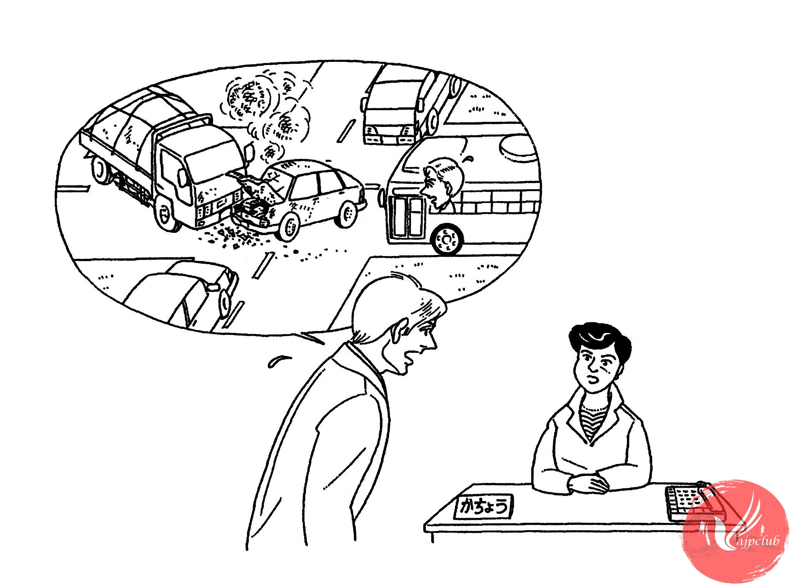

| ミラー： |
課長、遅れて、すみません。 |
| 中村課長： |
ミラーさん、どう したんですか。 |
| ミラー： |
実は 来る 途中で 事故が あって、バスが 遅れて しまったんです。 |
| 中村課長： |
バスの 事故ですか。 |
| ミラー： |
いいえ。交差点で トラックと 車が ぶつかって、バスが 動かなかったんです。 |
| 中村課長： |
それは 大変でしたね。 |
|
連絡が ないので、みんな 心配して いたんですよ。 |
|
| ミラー： |
電話したかったんですが、ケータイを うちに 忘れて しまって･････。 |
|
どうも すみませんでした。 |
|
| 中村課長： |
わかりました。 |
|
じゃ、会議を 始めましょう。 |